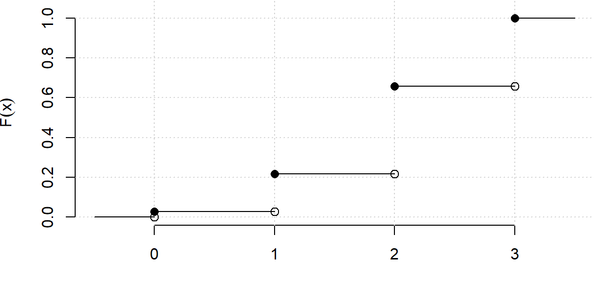
Tema 3. Variables aleatorias
Estatística. Grao en Intelixencia Artificial
Tema 3. Variables aleatorias
Ao rematar este tema deberías:

Introdución
Estatística descritiva
- Variables observadas nunha mostra
- Estudo despois do experimento
Neste tema
- Situámonos antes do experimento
- Uso da probabilidade
- Introdución ás variables aleatorias
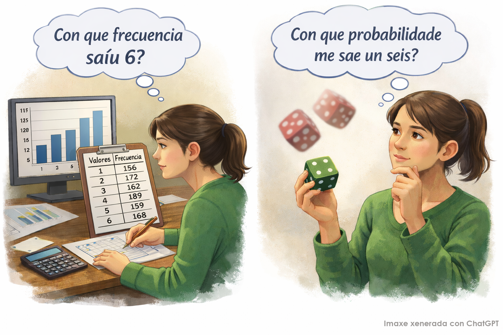
Conceptos básicos
Variable aleatoria.
Aplicación do espazo mostral asociado a un experimento aleatorio en \(\mathbb{R}\), que a cada resultado dese experimento lle asigna un número real, obtido pola medición dunha certa característica.
\[ \begin{array}{rccc} X:&\Omega&\longrightarrow &\mathbb{R} \\ &\omega&\longrightarrow &X(\omega) \end{array} \]
Un lector automático intenta ler o código de barras dos paquetes que pasan por unha cinta. En cada intento, a probabilidade de que o código se lea correctamente é \(p=0.7\), e a lectura dun paquete é independente das demais. O lector intenta ler o código de 3 paquetes.
\[ \Omega=\{FFF,\,FFC,\,FCF,\,CFF,\,FCC,\,CFC,\,CCF,\,CCC\} \]
Sexa \(X=\text{Número de lecturas correctas nos tres intentos}\)
\(X=\text{Número de lecturas correctas en tres intentos independentes}\)
\[ \begin{aligned} X:\Omega&\longmapsto \mathbb{R} \\ \{FFF\} &\longmapsto 0 \\ \{FFC,\,FCF,\,CFF\} &\longmapsto 1 \\ \{FCC,\,CFC,\,CCF\} &\longmapsto 2 \\ \{CCC\} &\longmapsto 3 \end{aligned} \]
Conceptos básicos
Función de distribución dunha variable aleatoria
É unha función \(F\) que, para cada valor \(x\in\mathbb{R}\), devolve a probabilidade de que a variable tome un valor menor ou igual que \(x\).
\[ F(x) = P(X \leq x) = P(\{\omega \in \Omega : X(\omega) \leq x\}) = P(X^{-1}((-\infty, x])) \]
Conceptos básicos
Función de distribución dunha variable aleatoria
É unha función \(F\) que, para cada valor \(x\in\mathbb{R}\), devolve a probabilidade de que a variable tome un valor menor ou igual que \(x\).
\[ F(x) = P(X \leq x) = P(\{\omega \in \Omega : X(\omega) \leq x\}) = P(X^{-1}((-\infty, x])) \]
Un autobús pasa por unha determinada parada cada quince minutos ao longo do día. Chego á parada nun momento aleatorio. Sexa \(X=\text{Tempo que teño que esperar a que chegue o autobús }\)
\[ F(x)=P(X \leq x)= \begin{cases} 0, & x<0, \\ \frac{x}{15}, & 0\le x<15, \\ 1, & x\ge 15. \end{cases} \]
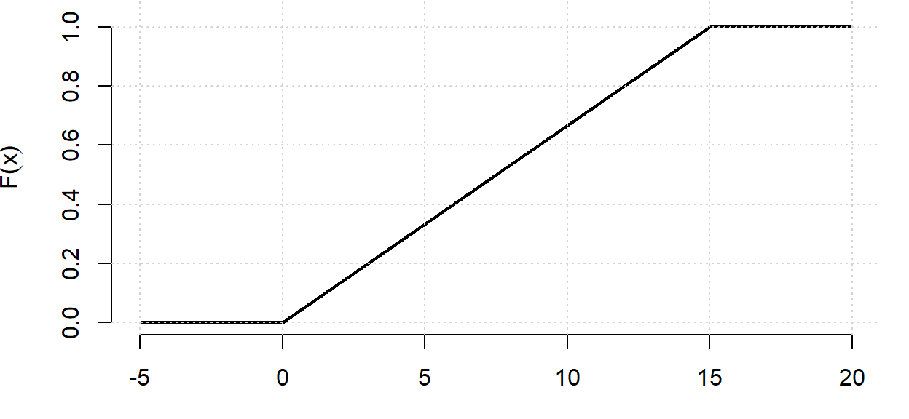
Conceptos básicos
Función de distribución dunha variable aleatoria
É unha función \(F\) que, para cada valor \(x\in\mathbb{R}\), devolve a probabilidade de que a variable tome un valor menor ou igual que \(x\).
\[ F(x) = P(X \leq x) = P(\{\omega \in \Omega : X(\omega) \leq x\}) = P(X^{-1}((-\infty, x])) \]
Propiedades da función de distribución:
- \(0 \leq F(x) \leq 1\)
- \(F\) é non decrecente
- \(\lim_{x \to +\infty} F(x) = 1\)
- \(\lim_{x \to -\infty} F(x) = 0\)
- \(F\) é continua pola dereita
Conceptos básicos
Ao igual que no tema de Estatística Descritiva, as variables aleatorias poden clasificarse en discretas e continuas, en función do conxunto de valores que poden tomar.
Variables aleatorias discretas
Toman unha cantidade numerable (que se pode contar) de valores. Por exemplo, o número de caras ao lanzar dúas veces unha moeda ou o número de correos electrónicos clasificados como SPAM por un filtro.
Variables aleatorias continuas
Toman todos os valores dentro dun ou varios intervalos da recta real, é dicir, unha cantidade infinita non numerable de valores. Por exemplo, se realizamos un experimento aleatorio no que obtemos un número ao azar entre no intervalo [0,1].
Variables aleatorias discretas
Función de masa
Se \(X\) é unha variable discreta, a súa distribución vén dada polos valores que pode tomar e polas probabilidades de que aparezan.
A función \(p(x)=P(X = x)\) denomínase función de probabilidade ou función de masa, sendo \(x\) donde calquera valor que poida tomar a variable. Observa que \(p(x)\geq 0\) para todo \(x\) e \(\sum_x p(x)=1\).
Variables aleatorias continuas
Función de densidade
Sexa \(X\) unha v.a. continua. A función de densidade de \(X\) é a función \(f\) non negativa e integrable tal que \[F(x)=P(X\leq x)=\int_{-\infty}^xf(t)dt.\]
De forma equivalente, \(f(x)=F'(x)\). A densidade non indica probabilidade directamente; a área baixo a curva entre dous valores é a que representa a probabilidade.
Variables aleatorias continuas
Función de densidade
Sexa \(X\) unha v.a. continua. A función de densidade de \(X\) é a función \(f\) non negativa e integrable tal que \[F(x)=P(X\leq x)=\int_{-\infty}^xf(t)dt.\]
De forma equivalente, \(f(x)=F'(x)\). A densidade non indica probabilidade directamente; a área baixo a curva entre dous valores é a que representa a probabilidade.
Propiedades da función de densidade:
- \(f(x) \geq 0\), para todo \(x \in \mathbb{R}\).
- \(\displaystyle \int_{-\infty}^{+\infty} f(x)\,dx = F(+\infty) = 1\).
- \(\displaystyle P(a \leq X \leq b) = \int_a^b f(x)\,dx = F(b) - F(a)\).
- A probabilidade de calquera valor concreto é 0: \(\displaystyle P(X = x_0) = \int_{x_0}^{x_0} f(x)\,dx = 0\).
Medidas características dunha variable aleatoria
Os conceptos que permitían resumir unha distribución de frecuencias utilizando valores numéricos poden utilizarse tamén para describir a distribución de probabilidade dunha variable aleatoria.
A media ou esperanza \(\mu\) representa o valor esperado ao realizar o experimento coa variable aleatoria. Ademais, a media pode verse tamén como o valor central da distribución de probabilidade.
A varianza \(\sigma^2\) é un valor non negativo que expresa a dispersión da distribución arredor da media.
A desviación típica poboacional \(\sigma\) é a raíz cadrada da varianza.
Pódense calcular medidas de forma como asimetría ou curtose
Os cuantís son os valores por debaixo dos cales se acumula unha determinada probabilidade.
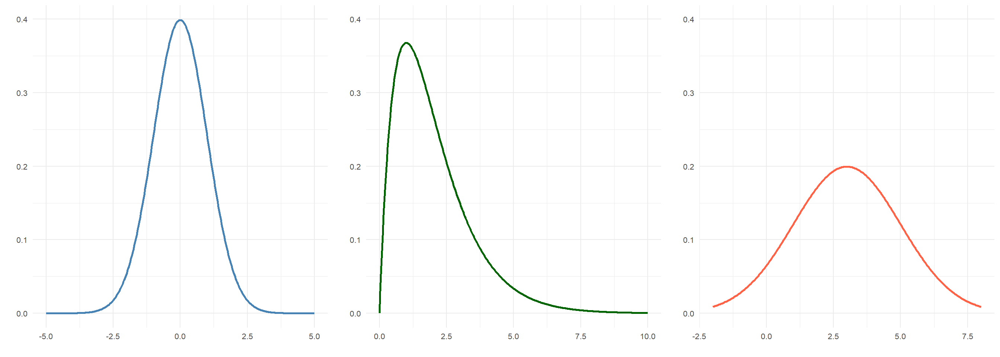
Medidas características dunha variable discreta
Media ou esperanza dunha variable aleatoria discreta
\[ \mu = \mathbb{E}(X) = \sum_{x} x P(X=x). \]
Varianza dunha variable aleatoria discreta
\[ \sigma^2 = \textnormal{Var}(X) = \mathbb{E}[(X-\mathbb{E}(X))^2]={\sum_{x} \left( x - \mu \right)^{2} P(X=x)}. \]
Pódese calcular de forma equivalente como \(\textnormal{Var}(X)=\mathbb{E}(X^2)-\mathbb{E}(X)^2.\)
\[ \begin{gathered} X=\text{Número de lecturas correctas en tres intentos independentes } (p=0.7)\\[4pt] \mu=0\cdot 0.027+1\cdot 0.189+2\cdot 0.441+3\cdot 0.343 =2.1\\[4pt] \sigma^2=(0-2.1)^2\cdot 0.027 + (1-2.1)^2\cdot 0.189 + (2-2.1)^2\cdot 0.441 + (3-2.1)^2\cdot 0.343 =0.63 \end{gathered} \]
Medidas características dunha variable continua
Media ou esperanza dunha variable aleatoria continua
\[ \mu = \mathbb{E}(X) = \int_{-\infty}^{+\infty} x \, f(x)\, dx. \]
Varianza dunha variable aleatoria continua
\[ \sigma^2 = \textnormal{Var}(X)=\mathbb{E}[(X-\mathbb{E}(X))^2]= \int_{-\infty}^{+\infty} (x - \mu)^2 \, f(x)\, dx. \]
Pódese calcular de forma equivalente como \(\textnormal{Var}(X)=\mathbb{E}(X^2)-\mathbb{E}(X)^2.\)
\[ \begin{gathered} X=\text{Tempo que teño que esperar a que chegue o autobús }\\ \mu=\int_{0}^{15} x\cdot \frac{1}{15}\,dx=7.5\\ \sigma^2=\int_{0}^{15} (x-7.5)^2\cdot \frac{1}{15}\,dx=18.75 \end{gathered} \]
Principais modelos de variables aleatorias discretas
Distribución de Bernoulli
En moitas ocasións atopámonos ante experimentos aleatorios con só dous posibles resultados: Éxito e fracaso. Sexa \(p\) a probabilidade de éxito. Poden modelarse estas situacións mediante a variable aleatoria \[X=\left\{\begin{array}{ll}1&\textnormal{se Éxito}\\ 0&\textnormal{se Fracaso}\end{array}\right.\] Así definida, \(X\) ten distribución de Bernoulli de parámetro \(p\) e denotamos \(X \sim \textnormal{Bernoulli}(p)\).
Función de masa
\[ \begin{aligned} p(0)={P}(X=0)&=1-p \\ p(1)={P}(X=1)&=p \end{aligned} \]
Características:
- \(\mathbb{E}(X) = p\)
- \(\mathrm{Var}(X) = p(1 - p)\)
Principais modelos de variables aleatorias discretas
Distribución binomial
Consideramos o experimento que consiste en repetir \(n\) veces un experimento de Bernoulli. Sexa \[X=\text{número de éxitos en } n \text{ experimentos independentes de Bernoulli de parámetro } p.\] Así definida, \(X\) ten distribución binomial de parámetros \(n\) e \(p\) e denotamos \(X\sim\text{Binom}(n, p)\).
Función de masa
\[ P(X = x) = \binom{n}{x} p^x (1 - p)^{n - x},\quad x = 0,1,\ldots,n. \]
Características:
- \(\mathbb{E}(X) = np\)
- \(\mathrm{Var}(X) = np(1 - p)\)
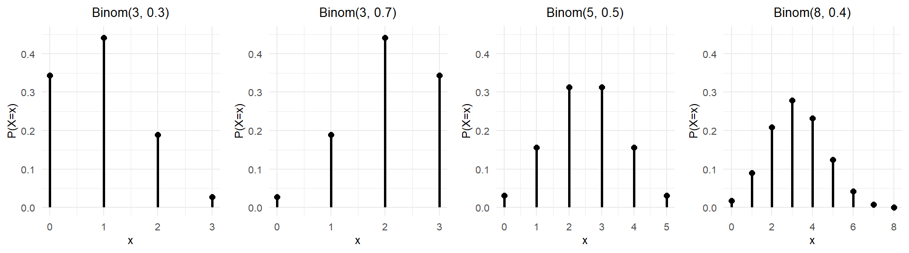
Principais modelos de variables aleatorias discretas
Distribución xeométrica
Consideramos o experimento que consiste en repetir un experimento de Bernoulli ata obter o primeiro éxito. Sexa \(p\) probabilidade de éxito en cada intento e \[X=\text{número de fracasos antes de obter o primeiro éxito}\] Así definida, \(X\) ten distribución xeométrica de parámetro \(p\) e denotamos \(X \sim \textnormal{Xe}(p)\).
Función de masa
\[ P(X = x) = (1 - p)^x p, \quad x = 0, 1, 2, \ldots \]
Características:
- \(\mathbb{E}(X) = \dfrac{1 - p}{p}\)
- \(\mathrm{Var}(X) = \dfrac{1 - p}{p^2}\)
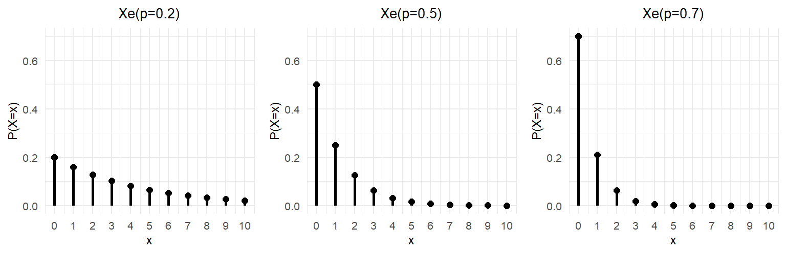
Principais modelos de variables aleatorias discretas
Distribución binomial negativa
Consideramos o experimento que consiste en repetir un experimento de Bernoulli ata obter o \(k\)-ésimo éxito. Sexa \(p\) probabilidade de éxito en cada intento e \[X=\text{número de fracasos antes de acadar o } k\text{-ésimo éxito}\] Así definida, \(X\) ten distribución binomial negativa de parámetros \(k\) e \(p\) e denotamos \(X \sim \textnormal{BN}(k, p)\)
Función de masa
\[ P(X = x) = \binom{k + x - 1}{x} p^k (1 - p)^x, \quad x = 0, 1, 2, \ldots \]
Características:
- \(\mathbb{E}(X) = \dfrac{k(1 - p)}{p}\)
- \(\mathrm{Var}(X) = \dfrac{k(1 - p)}{p^2}\)
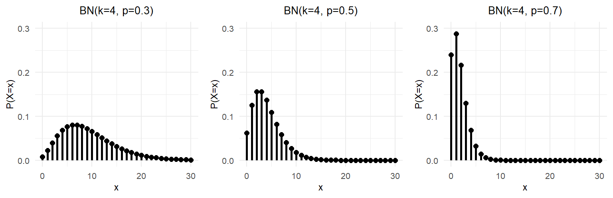
Principais modelos de variables aleatorias discretas
Distribución de Poisson
Un proceso de Poisson consiste en observar o número de veces que se presenta un suceso nun determinado intervalo (de tempo, espazo, …). Supónse que os sucesos ocorren de maneira aleatoria pero cunha taxa media constante. Sexa \(\lambda > 0\) o número medio de sucesos no intervalo e \[X=\text{número de éxitos por intervalo}\] Así definida \(X\) ten distribución de Poisson de parámetro \(\lambda\) e denotamos \(X \sim \text{Pois}(\lambda)\).
Función de masa
\[ P(X = x) = \frac{e^{-\lambda} \lambda^x}{x!}, \quad x = 0, 1, 2, \ldots \]
Características:
- \(\mathbb{E}(X) = \lambda\)
- \(\mathrm{Var}(X) = \lambda\)
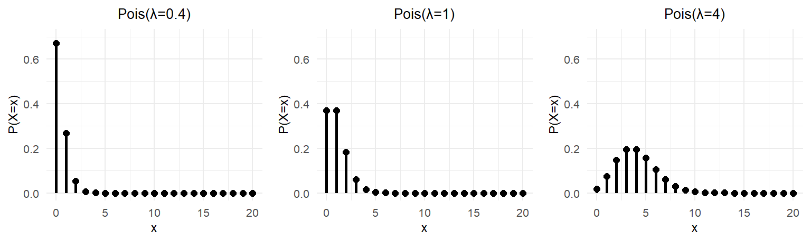
Principais modelos de variables aleatorias discretas
Distribución hiperxeométrica
Consideremos unha poboación finita de \(N\) elementos, dos cales \(k\) pertencen á clase \(D\) e \(N-k\) ao resto. Tomamos unha mostra sen reposición de tamaño \(n\) e estudamos a variable aleatoria \[X=\text{número de elementos da clase }D\text{ na mostra de tamaño }n\] Así definida, \(X\) ten distribución hiperxeométrica de parámetros \(N\), \(n\) e \(k\) e denotamos \(X \sim \text{H}(N, n, k)\)
Función de masa
\[ P(X = x) = \frac{\binom{k}{x} \binom{N-k}{n - x}}{\binom{N}{n}}, \quad \max\{0, n - (N - k)\} \le x \le \min\{k, n\}. \]
Características:
Sexa \(p = \frac{k}{N}\).
- \(\mathbb{E}(X) = n p\)
- \(\mathrm{Var}(X) = \frac{n p (1 - p) (N - n)}{N - 1}\)
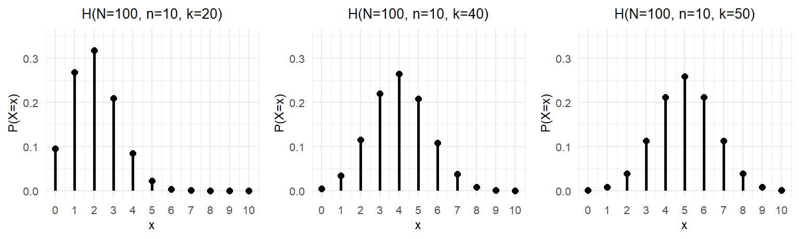
Principais modelos de variables aleatorias discretas
Distribución uniforme discreta
Unha variable aleatoria \(X\) que toma os valores \(\{x_1, \ldots, x_n\}\) dise uniforme discreta se todos eles son equiprobables.
Función de masa
\[ P(X = x) = \frac{1}{n}, \quad x = x_1, \ldots, x_n. \]
Características:
- \(\mathbb{E}(X) = \frac{1}{n} \sum_{i=1}^n x_i\)
- \(\mathrm{Var}(X) = \frac{1}{n} \sum_{i=1}^n (x_i - \mathbb{E}(X))^2\)
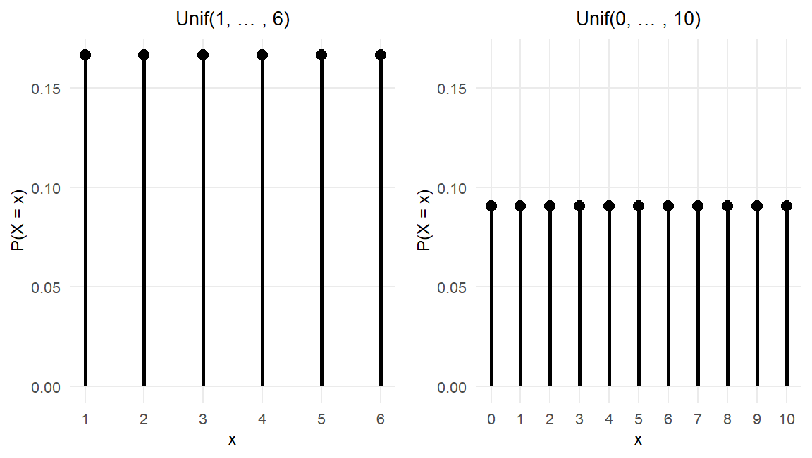
Principais modelos de variables aleatorias continuas
Distribución uniforme continua
Dicimos que unha variable aleatoria \(X\) segue unha distribución uniforme no intervalo \([a,b]\) se a súa función de densidade \(f\) é constante nese intervalo. Denotamos \(X\sim \text{Unif}(a,b)\).
Función de densidade
\[ f(x) = \begin{cases} \frac{1}{b - a}, & \text{se } x \in (a,b), \\ 0, & \text{en caso contrario}. \end{cases} \]
Características:
- \(\mathbb{E}(X) = \frac{a + b}{2}\)
- \(\text{Var}(X) = \frac{(b - a)^2}{12}\)
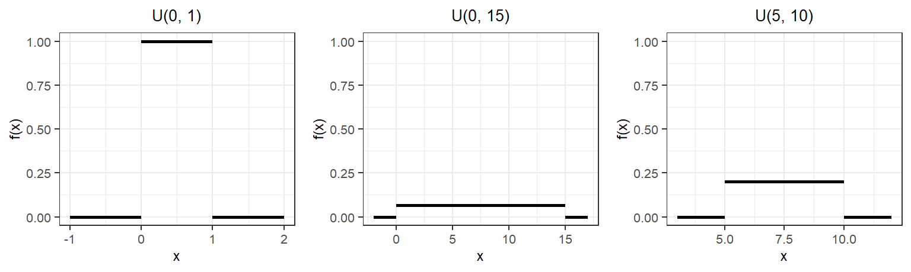
Principais modelos de variables aleatorias continuas
Distribución normal
A distribución normal é a máis utilizada de todas as distribucións de probabilidade. Son moitas as magnitudes que poden modelarse habitualmente mediante distribucións normais. Ademais, a importancia da distribución normal deriva do Teorema Central do Límite que veremos mais adiante
Unha variable \(X\) normal de media \(\mu\) e varianza \(\sigma^{2}\) denótase \(X\sim \text{N}(\mu, \sigma)\).
Función de densidade
\[ f(x) = \frac{1}{\sigma \sqrt{2\pi}} e^{-\frac{(x - \mu)^2}{2\sigma^{2}}}, \quad -\infty < x < \infty. \]
Características:
- \(\mathbb{E}(X) = \mu\)
- \(\text{Var}(X) = \sigma^2\)
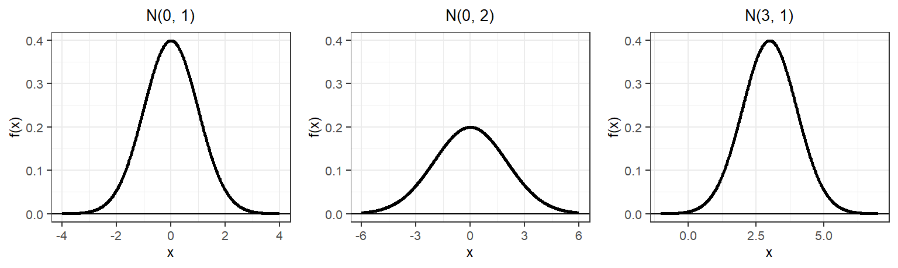
Principais modelos de variables aleatorias continuas
Estandarización dunha variable normal
Moitas veces resulta útil transformar unha variable normal \(X\sim \text{N}(\mu, \sigma)\) nunha variable normal estándar (de media 0 e varianza 1). Isto faise mediante a estandarización:
\[Z=\frac{X-\mu}{\sigma}\sim \text{N}(0, 1).\]
A estandarización é útil porque bastaría coñecer a distribución normal estándar para calcular probabilidades de calquera normal. Na gráfica represéntase en azul a función de densidade dunha variable \(X\sim \text{N}(\mu=4, \sigma=2)\) e en vermello a función de densidade dunha variable \(Z\sim \text{N}(0, 1)\).
\[P(X\leq 6)=P\left(\frac{X-4}{2}\leq \frac{6-4}{2}\right)=P(Z\leq 1)\]
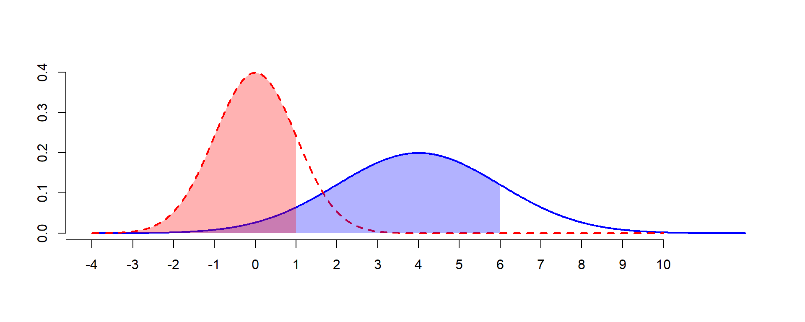
Principais modelos de variables aleatorias continuas
Distribución exponencial
Consideremos agora a variable aleatoria \(X\) que estuda o tempo entre dous sucesos consecutivos de Poisson. Esta seguirá unha distribución exponencial de parámetro \(\lambda\) e denótase \(X\sim\text{Exp}(\lambda)\).
Podemos dicir entón que unha distribución de Poisson mide o número de sucesos por unidade de tempo e unha exponencial o tempo que tarda en producirse un suceso.
Función de densidade
\[f(x) = \begin{cases} \lambda e^{-\lambda x} & \text{se } x > 0, \\ 0 & \text{noutro caso}. \end{cases}\]
Características:
- \(\mathbb{E}(X) = \frac{1}{\lambda}\)
- \(\text{Var}(X) = \frac{1}{\lambda^2}\)
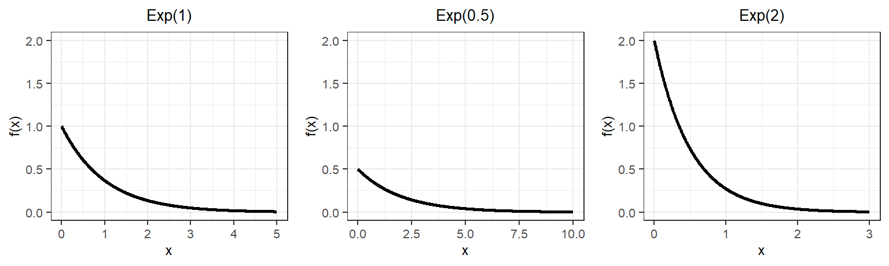
Principais modelos de variables aleatorias continuas
Distribución gamma
Unha variable aleatoria \(X\) que mide o tempo de espera ata o suceso número \(k\) nun proceso de Poisson segue unha distribución gamma de parámetros \(\lambda\) e \(k\). Denótase por \(X\sim\text{Gamma}(\lambda, k)\), onde o primeiro parámetro representa o número medio de sucesos por unidade de tempo e \(k\) é o número de sucesos que queremos que ocorran.
Función de densidade
\[ f(x) = \begin{cases} \frac{\lambda^k}{\Gamma(k)} e^{-\lambda x} x^{k-1} & \text{se } x > 0, \\ 0 & \text{noutro caso}. \end{cases} \]
onde \[ \Gamma(p) = \int_0^\infty x^{p-1} e^{-x} \, dx, \]
Características:
- \(\mathbb{E}(X) = \frac{k}{\lambda}\)
- \(\text{Var}(X) = \frac{k}{\lambda^2}\)
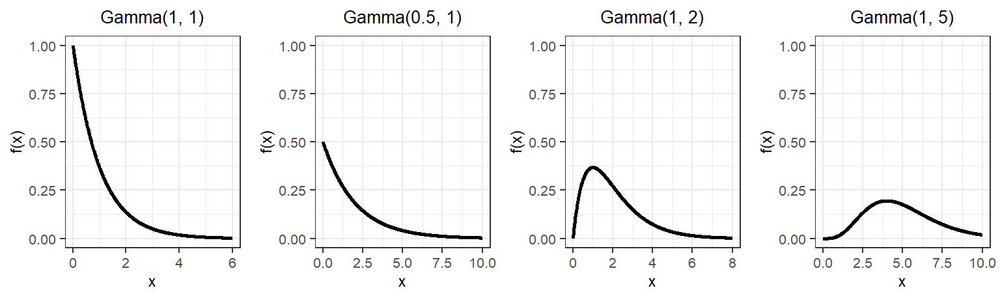
Principais modelos de variables aleatorias continuas
Distribución beta
Unha distribución beta é distribución de probabilidade continua definida no intervalo [0,1], empregada para modelar proporcións, porcentaxes ou probabilidades. Diremos que unha variable aleatoria \(X\) segue unha distribución beta de parámetros \(p\) e \(q\), e denotamos \(X\sim\text{Beta}(p,q)\) con \(p\) e \(q\) positivos se a súa función de densidade vén dada como se indica a continuación.
Función de densidade
\[ f(x) = \begin{cases} \frac{x^{p-1} (1 - x)^{q-1}}{\beta(p,q)} & \text{se } 0 < x < 1, \\ 0 & \text{noutro caso}. \end{cases} \]
onde
\[ \beta(p,q) = \int_0^1 x^{p-1}(1 - x)^{q-1} \, dx = \frac{\Gamma(p) \cdot \Gamma(q)}{\Gamma(p + q)}. \]
Características:
- \(\mathbb{E}(X) = \frac{p}{p + q}\)
- \(\text{Var}(X) = \frac{pq}{(p + q)^2 (p + q + 1)}\)
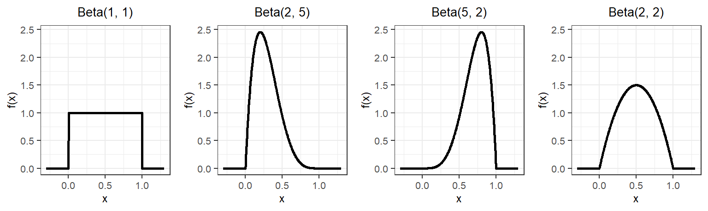
Teorema Central do Límite
O Teorema Central do Límite establece que, se temos unha sucesión de variables aleatorias independentes e idénticamente distribuídas (i.i.d.), cunha media finita \(\mu\) e unha varianza finita \(\sigma^2\), entón a distribución da súa suma (ou, de maneira equivalente, da súa media) tende a unha distribución normal cando o número de variables é suficientemente grande.
Teorema Central do Límite
Se \(X_1, X_2, \ldots, X_n\) son variables aleatorias i.i.d. con \(\mathbb{E}(X_i)=\mu\) e \(\text{Var}(X_i)=\sigma^2\), entón \[\frac{\sum_{i=1}^n X_i-n\mu}{\sigma\sqrt{n}}\underset{n\to\infty}{\longrightarrow }N(0,1)\] De forma equivalente, a media muestral \(\bar{X}_n=\frac{1}{n}\sum_{i=1}^nX_i\) verifica \[\frac{\bar{X}_n-\mu}{\sigma/\sqrt{n}}\underset{n\to\infty}{\longrightarrow } N(0,1)\]
Teorema Central do Límite
O Teorema Central do Límite establece que, se temos unha sucesión de variables aleatorias independentes e idénticamente distribuídas (i.i.d.), cunha media finita \(\mu\) e unha varianza finita \(\sigma^2\), entón a distribución da súa suma (ou, de maneira equivalente, da súa media) tende a unha distribución normal cando o número de variables é suficientemente grande.
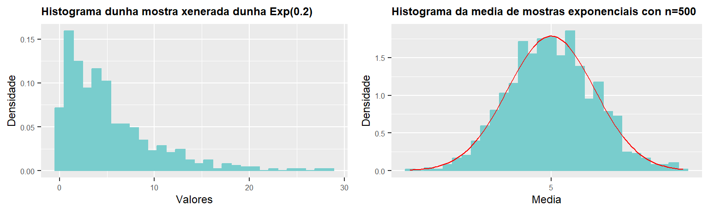
Teorema Central do Límite
\[\frac{\bar{X}_n-\mu}{\sigma/\sqrt{n}}\underset{n\to\infty}{\longrightarrow } N(0,1)\]
Teorema Central do Límite
O Teorema Central do Límite xustifica as seguintes aproximacións da distribución binomial e Poisson a unha normal.
Aproximacións entre variables aleatorias
- Se \(n\) é grande (\(n > 30\)) e \(np > 5\) e \(n(1 - p) > 5\), entón a binomial \(\text{Binom}(n, p)\) pódese aproximar por unha normal con media \(\mu = np\) e varianza \(\sigma^2 = np(1 - p)\).
- Se \(n\) é grande (\(n > 50\)) e \(np < 5\), entón a binomial \(\text{Binom}(n, p)\) pódese aproximar por unha Poisson con media \(\lambda = np\).
- Se \(\lambda \geq 5\), entón a Poisson pódese aproximar por unha normal con media \(\mu = \lambda\) e varianza \(\sigma^2 = \lambda\).
Corrección por continuidade. Para aproximar unha das variables discretas pola normal utilizamos a corrección: \[P(X_d = x) \approx P(x - 0.5 \leq X_c \leq x + 0.5).\]
Tema 3.Variables aleatorias
Ao rematar este tema deberías:

Beatriz Pateiro López